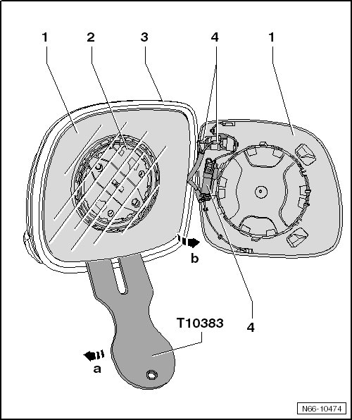

Mirror Glass
Exterior Mirror. from 11.2006
Mirror Glass
Removing
CAUTION!
Wear protective eyewear and gloves when working.

- Protect the paintwork on the edge of the housing - 3 - with fabric-reinforced adhesive tape.
- Push mirror glass into mirror housing at the top.
- Remove the mirror glass - 1 - from the bracket - 2 - using a wedge (T10383) - arrow a -.
- Move the mirror glass to the side - arrow b - and disconnect the connectors - 4 - on the back of the mirror glass.
installing
- Reconnect the mirror heating connector on the mirror glass.
- Press the center of the mirror glass onto the retainer in the housing.
- The mirror glass will engage with a click.